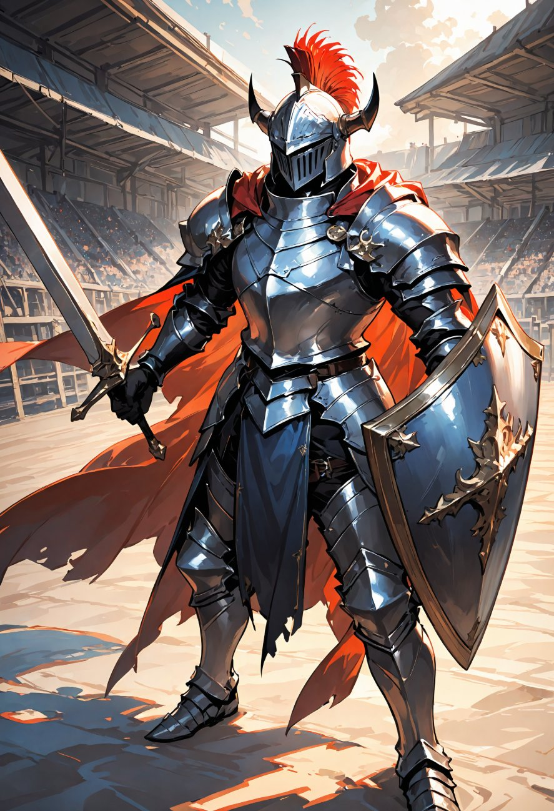
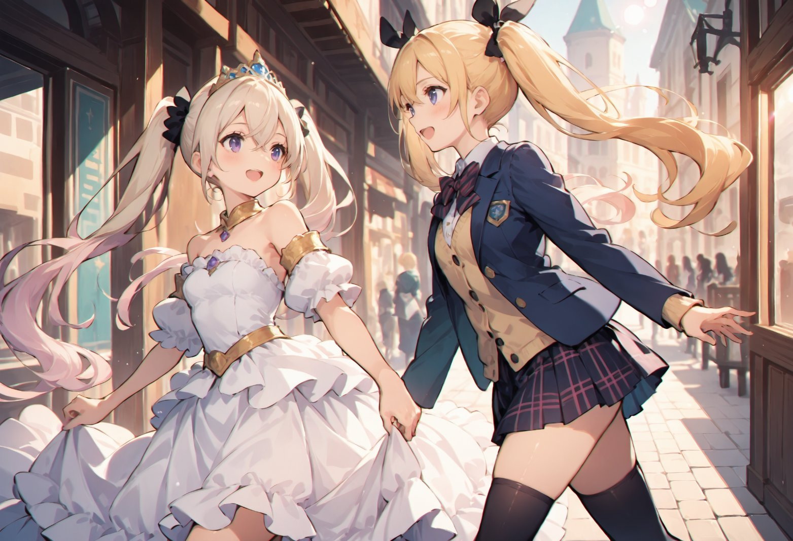

第4話
「せっかくこの世界に来たのですから、まずは街を見てください！」 ミユ姫が微笑みながら手を差し伸べ、美桜ちゃんを城下町へと誘った。
美桜ちゃんは城の大きな門を抜けた瞬間、目の前に広がる景色に目を見張る。 「わぁ～！これ、ゲームの世界みたい！」 石畳の道が太陽の光を受けて輝き、その先には石造りの建物がずらりと並ぶ。 古風な街灯が温かみのある光を灯し、まるで物語の中に迷い込んだようだ。
道行く人々は、それぞれ独特な異国風の服を身にまとい、美桜ちゃんには見慣れない魔法の道具やアクセサリーを手にしている。 道端には大道芸人が小さな炎を操り、子どもたちが歓声を上げていた。 「すごい……みんな楽しそう。」 美桜ちゃんの目が輝く。 街角には小さな屋台や露店が立ち並び、売られている商品は美桜ちゃんにとってまるで異世界そのものだ。

老若男女問わず、誰もがミユ姫に親しげな笑顔を向け、彼女に声をかける。 ふと、美桜ちゃん達の目の前に、小さな女の子が駆け寄ってきた。 「ミユ姫様！」 手にぎゅっと握られていたのは、小さな花束だった。庭で摘んだらしい素朴な花がぎゅうぎゅうに詰まっている。 「これ、あげる！」と、ほんの少し恥ずかしそうに差し出す。
ミユ姫は目を丸くしたあと、しゃがんでその子の目線に合わせた。 「まあ、ありがとう。こんなに可愛い花をいただけるなんて、とても嬉しいわ。」 そっと花束を受け取りながら、優しい笑顔を向けると、女の子は一瞬きょとんとしたあと、顔を真っ赤にして嬉しそうに頷いた。
「ミユ姫様、また遊びに来てね！」 女の子が手を振りながら走り去っていくのを見届けた後、ミユ姫は花束を大切そうに胸に抱えた。
「いつも皆さんのおかげで、この国が成り立っています。私も、この国の一人一人を心から大切に思っています。」 その言葉に、美桜ちゃんはミユ姫を見上げて思わず呟いた。 「ミユ姫って、本当に街の人たちから慕われてるんだね。」 「そう思いますか？」 ミユ姫が少し照れたように微笑むと、美桜ちゃんはにっこりと頷いた。 「うん、みんながミユ姫のこと、大好きなのが伝わってくるよ！」

賑やかな市場を後にして歩いていると、広場の片隅に大きな訓練場が見えてきた。そこでは屈強な騎士たちが剣術や魔法の訓練をしている。 剣を振るう音や掛け声が響き渡り、その迫力に美桜ちゃんは思わず足を止めた。 「わぁ、すごい……」 美桜ちゃんが呟くと、ミユ姫がにこりと微笑む。 「彼らはこの国を守る誇り高き騎士団です。ミオちゃんも興味がありますか？」
その時、一際立派な鎧を身にまとった男性がこちらに歩み寄ってきた。 その雰囲気と佇まいから、ただ者ではないことがすぐにわかる。 「あなたが勇者様ですね？」 彼は軽く頭を下げると、真剣な表情で続けた。 「失礼ながら、勇者様がどれほどの実力をお持ちなのか、ぜひ手合わせさせていただきたい。これも国を守る者としての務めです。」
「えええええ～～！？」
― この話はここまで ―